2026년 4월 24일 이전에 생산된 제품들입니다.
베이프렌드 반월당점에서 새 매장 소식을 전해요. 동성로2호점이 문을 열면서 액상 진열도 새로 자리를 잡았어요. 대구전자담배 매장 새 지점의 액상을 맛 계열로 나눠 소개해 드릴게요.
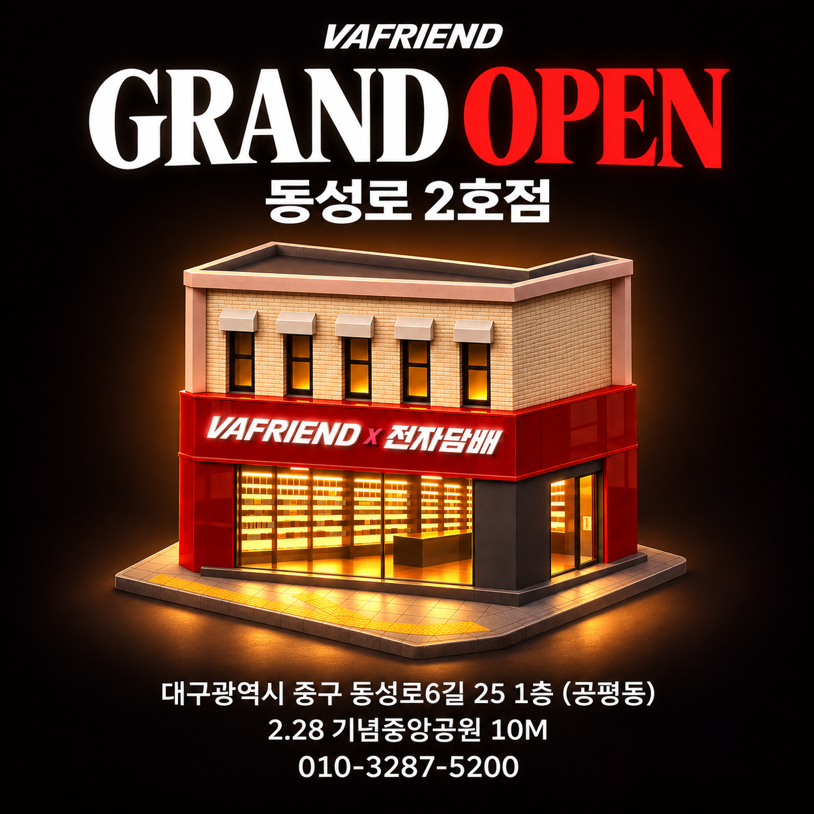
사진 1 (대표이미지)
동성로2호점 오픈 소식
사진 받기폰은 사진을 길게 눌러 저장, PC는 [사진 받기]
먼저 벽면 진열을 보세요
액상은 불 켜진 벽면 진열대에 칸칸이 놓여 있어요.
어떤 맛이 있는지 먼저 쭉 보시면 고르기 쉬워요.
궁금한 액상은 집어서 라벨을 확인해 보세요.
조명이 뒤에서 비춰서 라벨이 잘 보여요.
📷📷 사진 2, 3 — 두 장을 콜라주로 묶어서 한 칸에
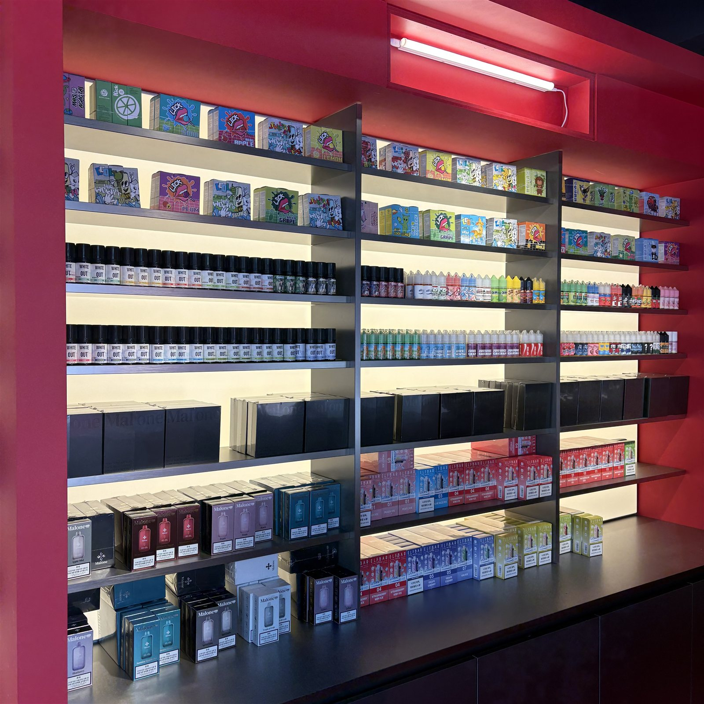
사진 2
액상 벽면 진열
사진 받기폰은 사진을 길게 눌러 저장, PC는 [사진 받기]
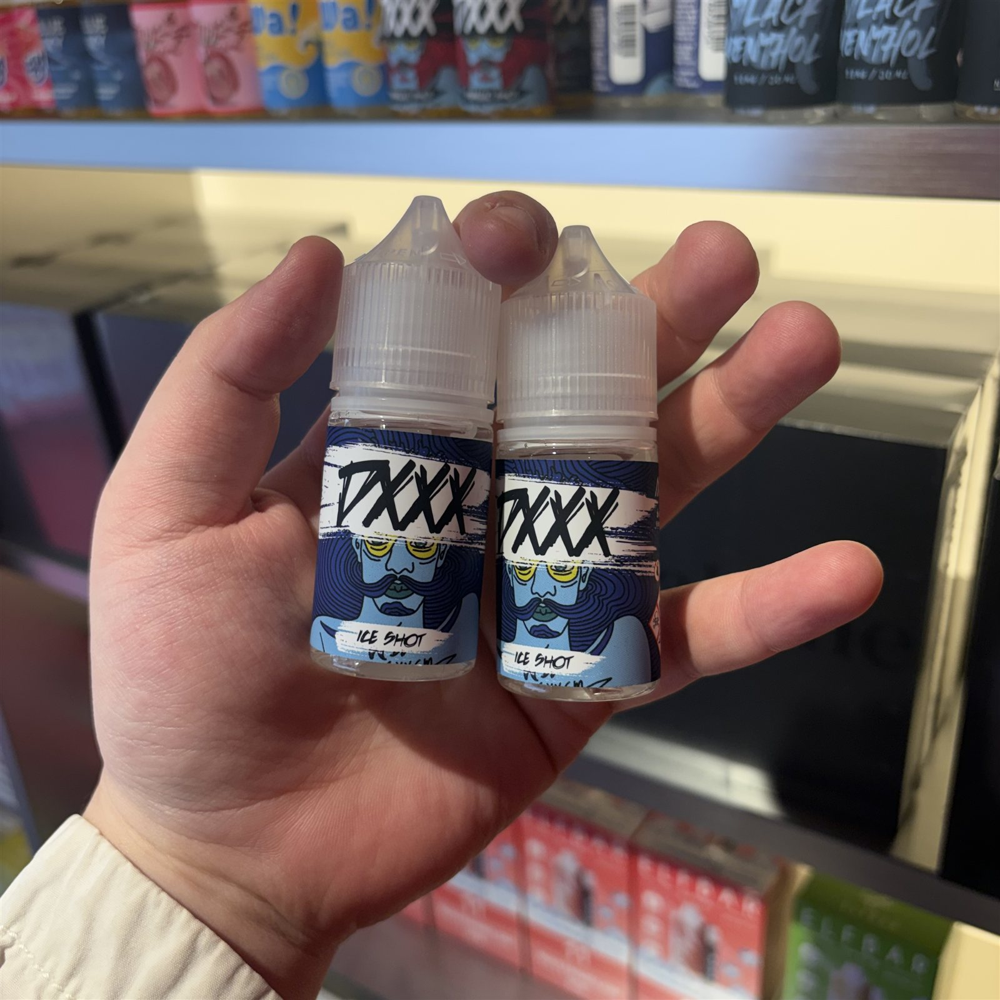
사진 3
액상 두 병 손에
사진 받기폰은 사진을 길게 눌러 저장, PC는 [사진 받기]
콜라주 만드는 법 — 사진 두 장을 한 번에 올린 뒤, 사진을 클릭하면 위에 뜨는 메뉴에서 「콜라주」를 고르세요.
과일 맛을 좋아하신다면
달콤하고 상큼한 맛을 좋아하신다면 과일 계열부터 보세요.
같은 과일 계열이라도 단맛 정도가 맛마다 달라요.
평소 좋아하는 과일을 말씀해 주시면 비슷한 맛을 찾아 드려요.
📷📷 사진 4, 5 — 두 장을 콜라주로 묶어서 한 칸에
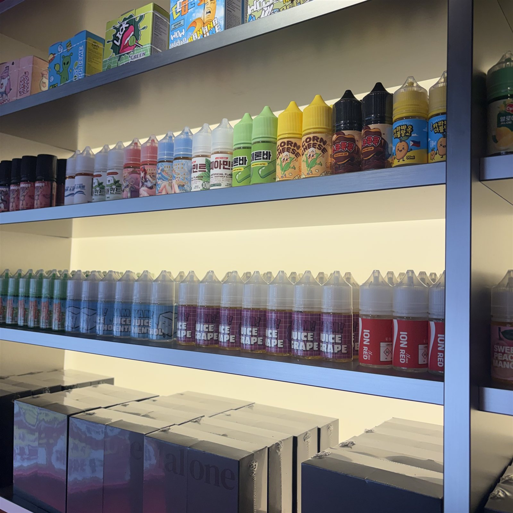
사진 4
액상 진열 칸
사진 받기폰은 사진을 길게 눌러 저장, PC는 [사진 받기]
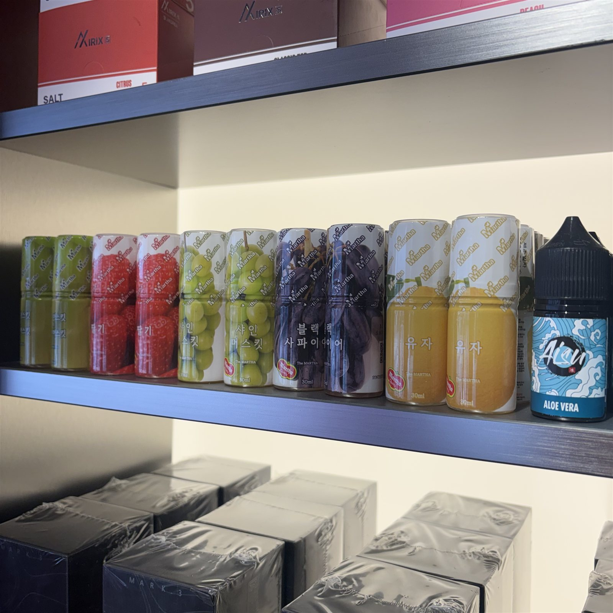
사진 5
액상 진열 가까이
사진 받기폰은 사진을 길게 눌러 저장, PC는 [사진 받기]
콜라주 만드는 법 — 사진 두 장을 한 번에 올린 뒤, 사진을 클릭하면 위에 뜨는 메뉴에서 「콜라주」를 고르세요.
시원한 맛을 좋아하신다면
깔끔하고 시원한 느낌을 좋아하신다면 시원한 맛 계열이 있어요.
차가운 정도가 맛마다 달라서 직접 맛보고 고르시는 게 좋아요.
처음이라면 시연팟으로 먼저 맛보고 고르시면 돼요.
📷📷 사진 6, 7 — 두 장을 콜라주로 묶어서 한 칸에
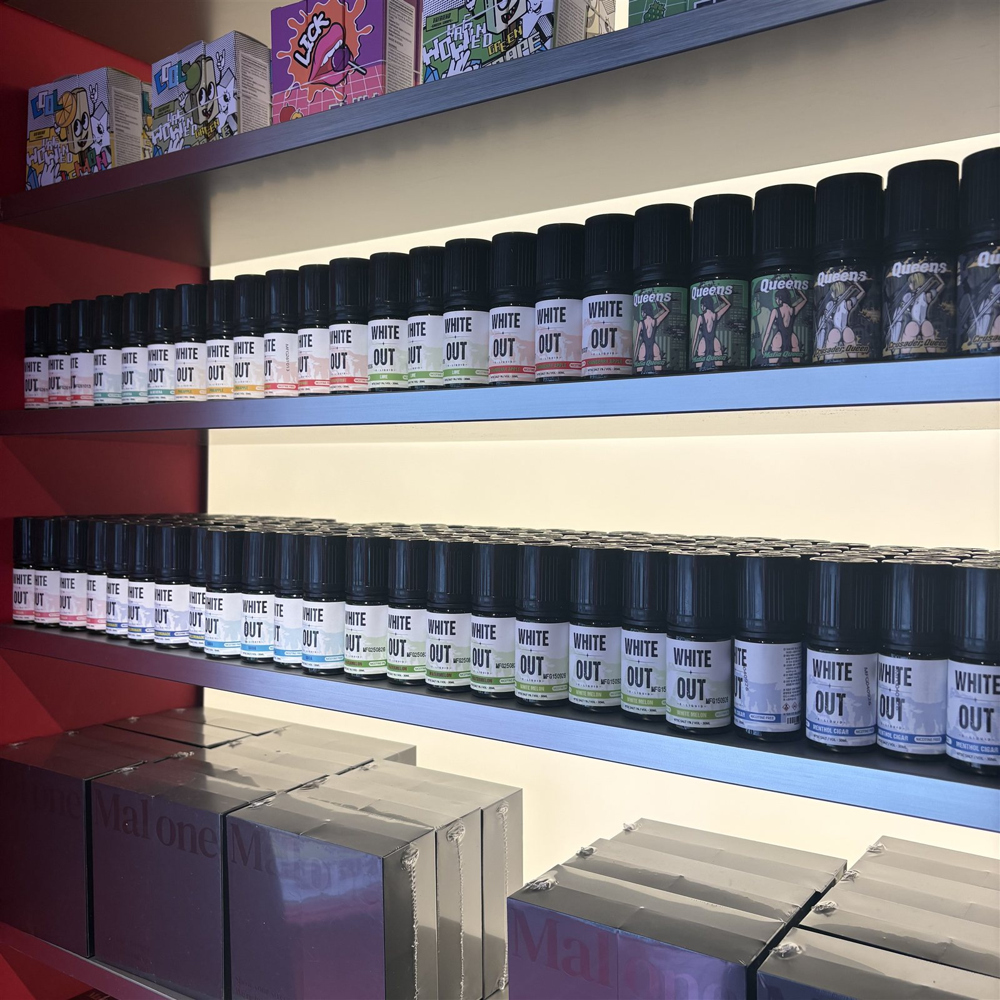
사진 6
액상 진열 칸
사진 받기폰은 사진을 길게 눌러 저장, PC는 [사진 받기]
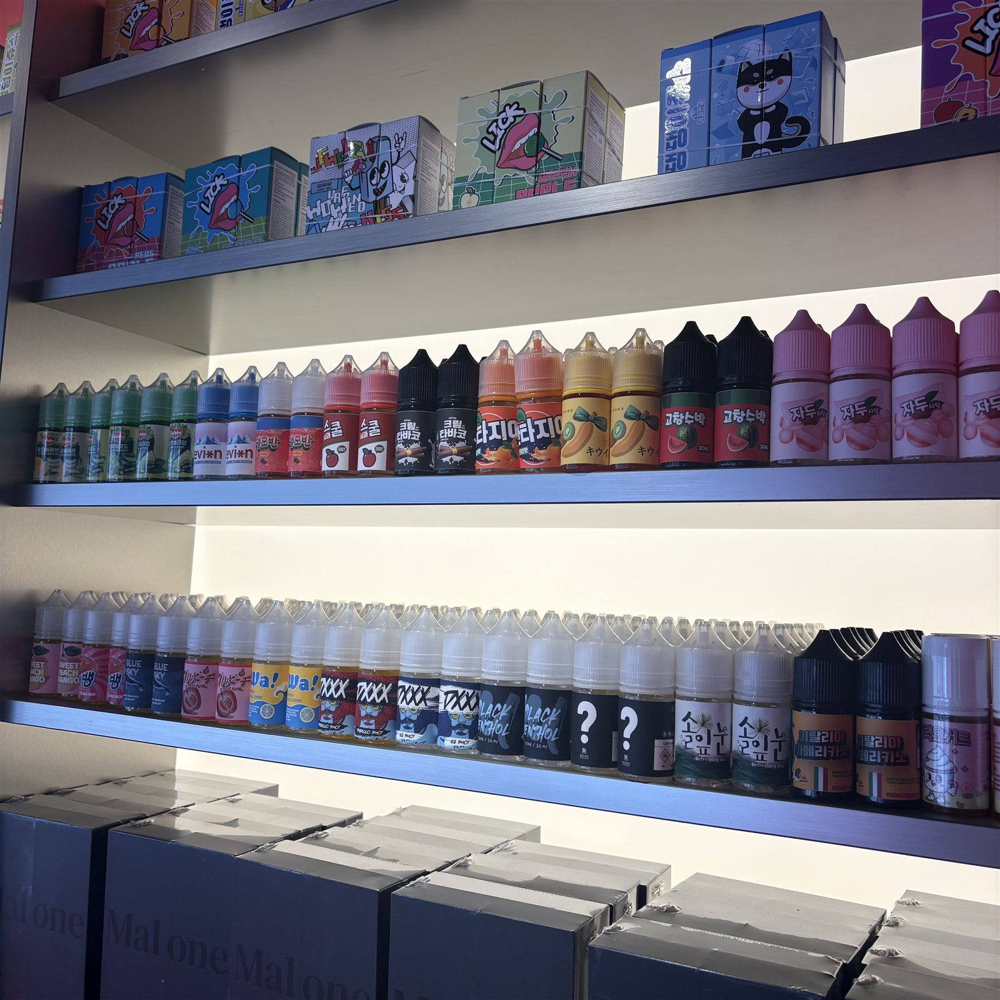
사진 7
액상 진열 칸
사진 받기폰은 사진을 길게 눌러 저장, PC는 [사진 받기]
콜라주 만드는 법 — 사진 두 장을 한 번에 올린 뒤, 사진을 클릭하면 위에 뜨는 메뉴에서 「콜라주」를 고르세요.
담배 맛을 찾으신다면
연초에서 넘어오신 분은 담배 맛 계열부터 맛보시면 비교하기 쉬워요.
대구전자담배 매장에서 직접 맛보고 비교해 보세요.
진한 정도가 맛마다 달라서 두세 가지를 같이 보시면 좋아요.
📷📷 사진 8, 9 — 두 장을 콜라주로 묶어서 한 칸에
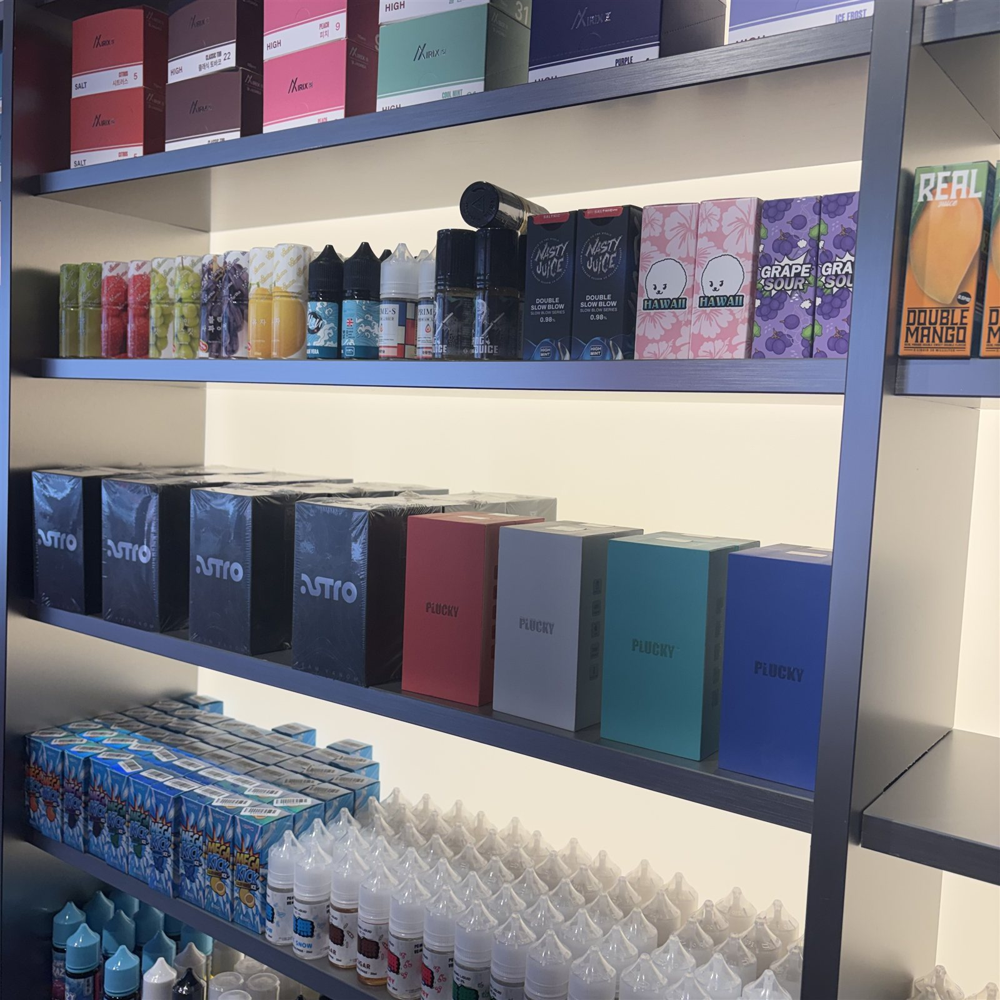
사진 8
액상과 박스 진열
사진 받기폰은 사진을 길게 눌러 저장, PC는 [사진 받기]
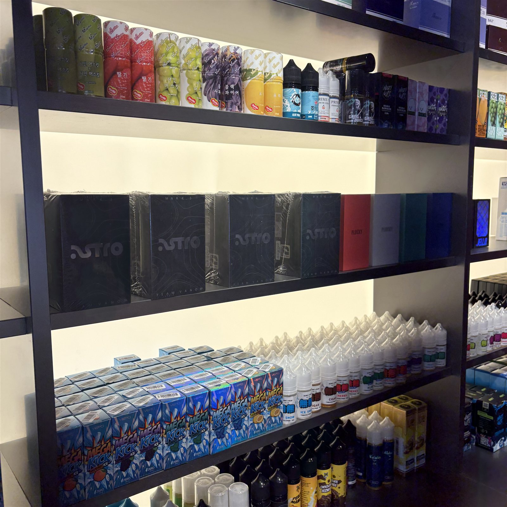
사진 9
액상 진열 아래 칸
사진 받기폰은 사진을 길게 눌러 저장, PC는 [사진 받기]
콜라주 만드는 법 — 사진 두 장을 한 번에 올린 뒤, 사진을 클릭하면 위에 뜨는 메뉴에서 「콜라주」를 고르세요.
고르기 어려우면 시연팟으로
카운터에 놓인 시연팟으로 두세 가지를 맛보고 고르시면 돼요.
평소 좋아하는 음료를 말씀해 주셔도 좋아요.
쓰시는 기기도 같이 말씀해 주시면 맞는 액상을 골라 드려요.
📷📷 사진 10, 11 — 두 장을 콜라주로 묶어서 한 칸에
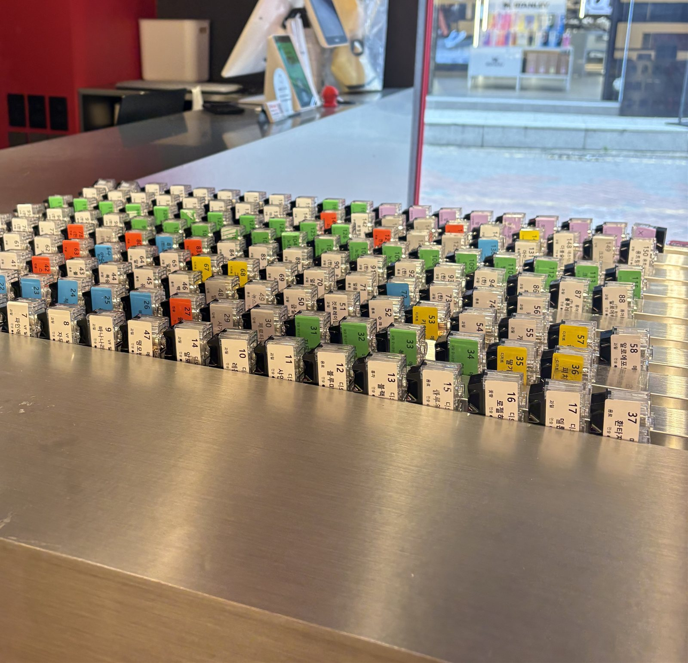
사진 10
시연팟
사진 받기폰은 사진을 길게 눌러 저장, PC는 [사진 받기]
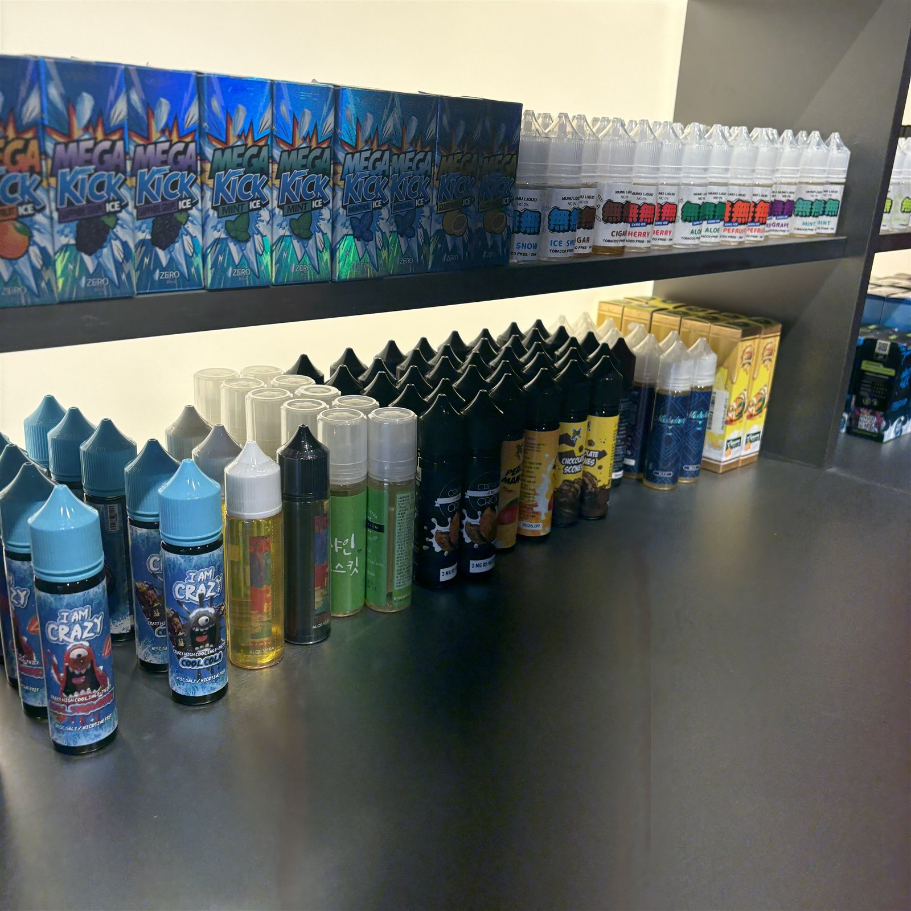
사진 11
액상 진열 아래 칸
사진 받기폰은 사진을 길게 눌러 저장, PC는 [사진 받기]
콜라주 만드는 법 — 사진 두 장을 한 번에 올린 뒤, 사진을 클릭하면 위에 뜨는 메뉴에서 「콜라주」를 고르세요.
새 매장에 들러 주세요
동성로2호점은 매일 11시부터 밤 10시까지 열어요.
새로운 맛이 궁금하시면 대구전자담배 매장 동성로2호점에 들러 주세요.
중앙로역 2번 출구에서 100m, 2.28기념중앙공원 옆이에요.
주차는 방문 전에 매장으로 물어봐 주세요.
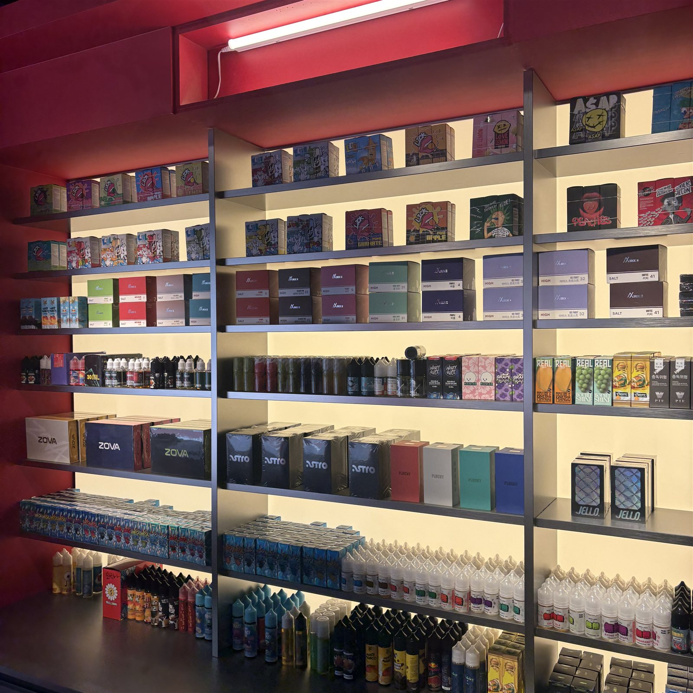
사진 12
벽면 진열 전체
사진 받기폰은 사진을 길게 눌러 저장, PC는 [사진 받기]
대구전자담배 매장 안내
대구전자담배 베이프렌드 동성로2호점이에요. 중앙로역 2번 출구에서 100m, 2.28기념중앙공원 옆이에요.
| 항목 | 내용 |
|---|
| 매장명 | 베이프렌드 전자담배 동성로2호점 |
| 주소 | 대구 중구 동성로6길 25 1층 (공평동) |
| 영업시간 | 매일 11:00~22:00 |
| 전화 | 010-3287-5200 |
| 오시는 길 | 중앙로역 2번 출구 100m, 2.28기념중앙공원 옆 |
| 주차 | 방문 전 매장 문의 |
| 확인 사항 | 만 19세 이상, 신분증 지참 |
이 표는 「표」 버튼으로 직접 만드세요 — 2칸 × 8줄
만 19세 이상만 구매하실 수 있어요. 방문하실 때 신분증을 꼭 챙겨 주세요.
🗺️
베이프렌드 전자담배 동성로2호점
방문 시 신분증 확인
지도 넣는 법 — 에디터 위쪽 「장소」 버튼 → 베이프렌드 전자담배 동성로2호점 검색 → 선택 (검색이 안 되면 주소 대구 중구 동성로6길 25로 검색)
#대구전자담배#동성로2호점#전자담배액상#동성로전자담배#베이프렌드동성로2호점#신규매장오픈#중앙로역전자담배#대구전자담배매장#베이프렌드전자담배#대구전자담배추천
태그 10개 그대로 넣으세요.